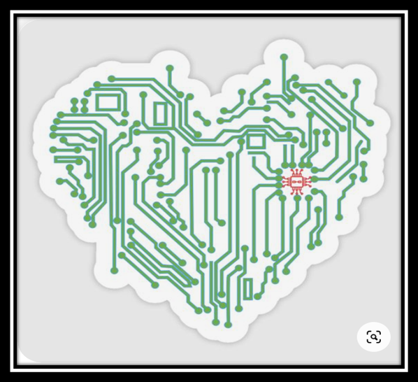

Introducción
En un mundo cada vez más interconectado y digitalizado, la tecnología ha dejado de ser un lujo para convertirse en una necesidad cotidiana. Desde el ámbito personal hasta el profesional, los avances tecnológicos son el motor que impulsa el progreso en todos los sectores. La creciente demanda de dispositivos, soluciones y herramientas tecnológicas ha abierto un panorama de oportunidades para empresas que buscan satisfacer las necesidades de un público cada vez más exigente y conocedor. En este contexto, surge Heart of Technology, una empresa dedicada a la comercialización en línea de productos tecnológicos con el firme objetivo de ofrecer a los usuarios acceso a lo último en innovación.
Heart of Technology no solo busca ser una tienda en línea, sino un punto de referencia para los entusiastas de la tecnología. Con una extensa gama de productos, que abarca desde dispositivos móviles y componentes de computadoras hasta gadgets inteligentes y accesorios de última generación, nuestra empresa pretende convertirse en el aliado de confianza para quienes desean estar a la vanguardia tecnológica. Nos enfocamos en ofrecer no solo una amplia variedad de productos, sino también una experiencia de compra segura, eficiente y personalizada, adaptada a las necesidades de cada cliente.
Además, Heart of Technology busca destacar por su enfoque en la innovación y sostenibilidad. En un entorno donde la rápida obsolescencia de los productos puede generar un impacto negativo en el medio ambiente, estamos comprometidos en promover soluciones tecnológicas que no solo sean innovadoras, sino también responsables. Nuestro catálogo incluirá productos que favorecen la eficiencia energética y que contribuyen a un uso más consciente de los recursos.
"En Heart of Technology creemos que la innovación no tiene límites y que, al poner la tecnología al alcance de todos, no solo conectamos dispositivos, sino también ideas que transforman el mundo."
"La tecnología es el puente entre el presente y el futuro, y en Heart of Technology nos esforzamos por ser la vía que te conecta con ese mañana, hoy."
"En Heart of Technology creemos que cada avance tecnológico es una oportunidad para mejorar la vida de las personas. Nuestra misión es llevar esas oportunidades directamente a tus manos."
Historia de "Heart of Technology"
Heart of Technology, que en español significa “El Corazón de la Tecnología”, nació el 29 de agosto de 2024 como una iniciativa audaz de un grupo de jóvenes visionarios. Estos emprendedores compartían una pasión común: la tecnología y su capacidad para transformar la vida cotidiana. Desde el principio, su objetivo fue claro: crear una plataforma accesible para todos, sin importar la ubicación o el nivel de conocimientos tecnológicos, con productos innovadores que no solo facilitaran la vida, sino que también ofrecieran seguridad y calidad a sus usuarios.
Los Primeros Pasos En los primeros días de Heart of Technology, el equipo fundador se enfrentó al reto de crear una marca que no solo fuera reconocida, sino que estableciera un nuevo estándar en la venta de tecnología en línea. La idea era simple, pero poderosa: “¿Cómo pueden las personas, sin moverse de donde están, adquirir productos tecnológicos de calidad, difíciles de encontrar y a la vanguardia de la innovación?” Con este propósito en mente, el equipo decidió que la solución óptima sería establecer una tienda en línea. Desde el comienzo, querían que los clientes pudieran no solo comprar productos tecnológicos desde la comodidad de sus hogares, sino que también tuvieran la confianza de que lo que estaban adquiriendo era de primera calidad, con seguridad y soporte técnico garantizado.
El Nombre: Una Declaración de Principios El nombre “Heart of Technology” tiene un significado profundo y simbólico. Para los fundadores, la tecnología no es solo una herramienta, sino el centro mismo de la vida moderna. En el mundo actual, la tecnología está en el corazón de todas las actividades humanas: desde la comunicación hasta el comercio, la educación, la salud y el entretenimiento. De ahí surgió el nombre, como una forma de reflejar la importancia central de la tecnología en nuestras vidas diarias. La idea de estos jóvenes era que su empresa se convirtiera en el “corazón” de la tecnología, el lugar donde los clientes podrían conectar con las innovaciones que mejoran y transforman sus vidas.
Comparativas de Productos
- Comparaciones de productos populares.
- ¿Qué producto es mejor para ti?
Logotipo de nuestra tienda en línea
Eslogan de la tienda
“Más Allá de la Imaginación, en el Corazón de la Tecnología”
Nuestro eslogan se define de esta manera ya que tenemos la visión de ver más allá de todo lo que nosotros ofrecemos de darle al cliente todo con solo ingresar y dar un clic.
Misión
En Heart of Technology, nuestra misión es empoderar a las personas brindándoles acceso a las últimas innovaciones tecnológicas, facilitando su compra a través de una plataforma en línea accesible, confiable y segura. Nos comprometemos a ofrecer productos que mejoren la vida cotidiana, combinando excelencia en el servicio, precios justos y un enfoque en la sostenibilidad. Buscamos ser el enlace que conecta a nuestros clientes con las soluciones tecnológicas del futuro, haciendo que la innovación sea parte integral de su vida
Visión
Ser el mejor servicio en línea sobre productos tecnológicos a nivel nacional Dar paso a paso en el mundo de la tecnología llevándolo al hogar de nuestros clientes innovando día con día. Como nuestro nombre lo indica “Heart of technology” siendo el corazón de la tecnología no podemos estar por debajo de otras empresas, Para poder desarrollar tecnología de calidad se colabora con empresas que ya llevan un camino recorrido en lo que es la tecnología y en conjunto poder llevar a tus manos productos buenos, bonitos y baratos.
Nuestro equipo de trabajo
Conformado por jóvenes con visión de ser una solución parea personas que necesitan estar al tanto de los nuevos cambios de la actualidad en la era moderna de la tecnología
- Karen Jeanitzi Tuj Pensamiento
- Álex Mauricio Vázquez Samayoa
- Mario Emanuel Mendoza Virula
- Emerson Alexander Roldán González
- Lester Aroldo Orozco Vicente
- Josué Nehemías Coquix Pérez
- Deiby Estiv Escalante Jimènez
- César Fernando Yoxón Díaz

Aca veras acerca nuestros productos
Ofertas por Temporada: Descuentos especiales por festividades como el Black Friday, Cyber Monday, Navidad, o incluso para eventos tecnológicos como lanzamientos de productos.
Haz clic aca